BANK 01 / ROTARY
Real knobs.
Real light.
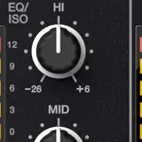
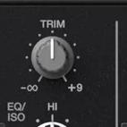
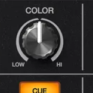
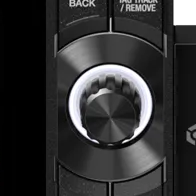
BANK 02 / PERFORMANCE
Colour that came
from the deck.
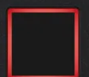
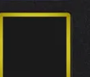
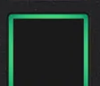
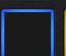
BANK 03 / LEVEL
Wide. Low.
Mechanical.
The channel-fader cap is a real object, not the tall CSS slider that distorted the earlier study. Sitewide use remains unapproved until Patrick judges this sample.
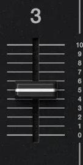
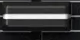
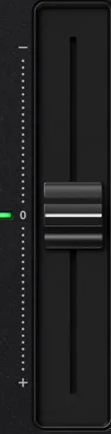
BANK 04 / MATERIAL
Panels leave marks.
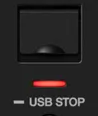
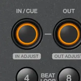
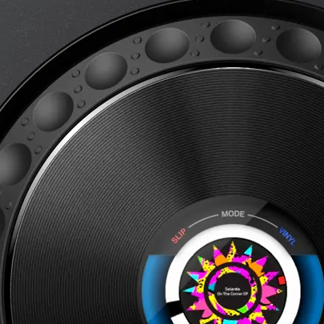
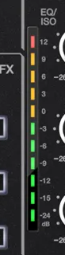
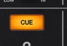
CH00 AUTHORITY / CONFIRMED